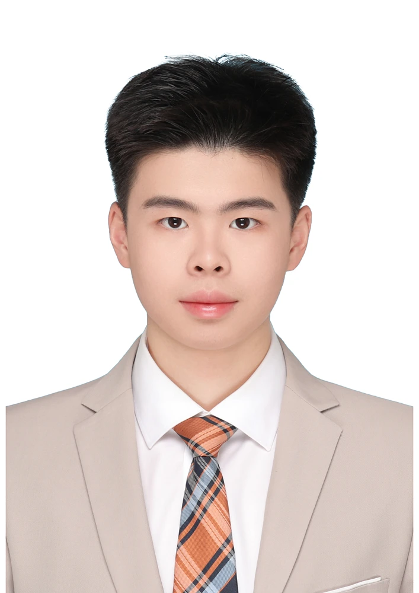
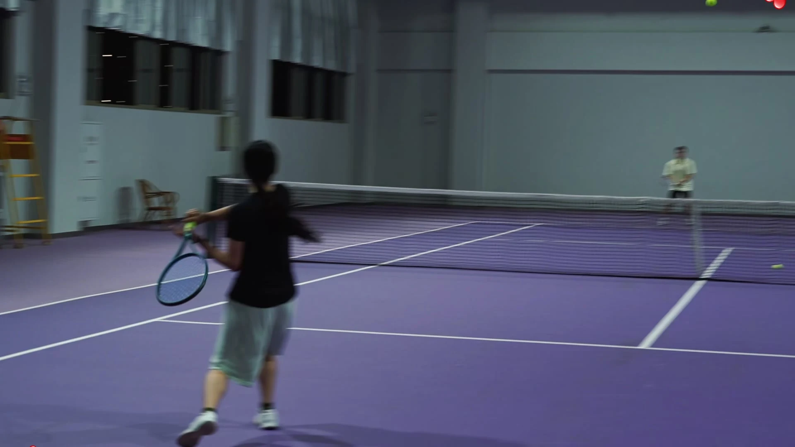

DESIGN PORTFOLIO SELECTED WORK / 2023—2026
PORT
FOLIO.

PROFILE WENJING BIAN
ABOUT
ME.
我是卞文璟，同济大学设计创意学院视觉传达设计与人工智能双学士在读，已推免录取浙江大学人工智能与设计项目。
我习惯把研究、视觉与实现放在同一个过程里：访谈帮助我找到值得解决的问题，交互和影像把想法展开，代码让它能够被实际操作。
作品涉及双人运动研究、行为建模、游戏系统、个性化视频与校园服务。这里呈现项目的设计选择、实际成果和我承担的工作。

产品与交互设计
用户研究与可视化
游戏系统与 AI 制作
雅思 6.5
大学英语六级 506
上海 · 月内到岗
每周 4 天 · 连续 2—3 个月
Selected projects.
十个项目，十种观察与制作的方式。
显示 10 个项目
没有匹配的项目，请调整关键词。
RESEARCH COLLABORATION / 2023—2026